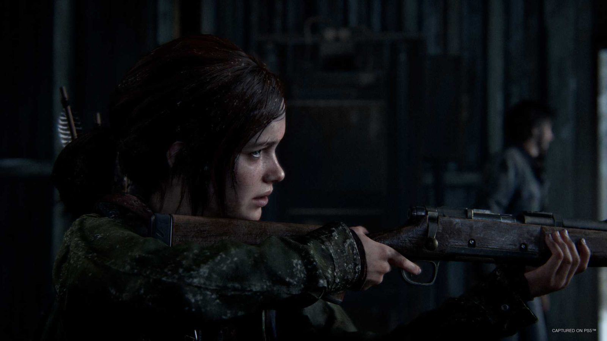
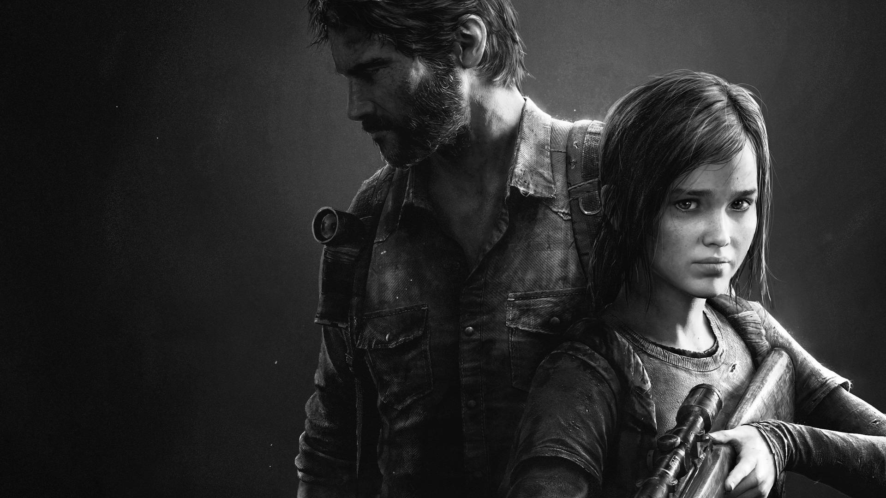
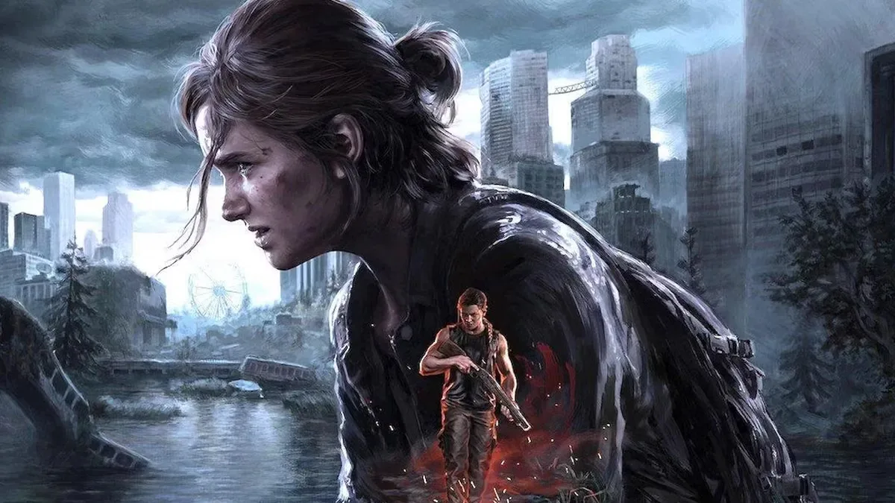
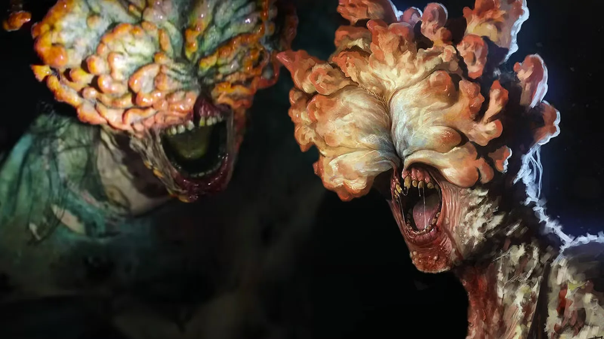

Parte I · Uma jornada pelos EUA
Joel precisa levar Ellie de Boston até os Vaga-lumes, cruzando um país em ruínas. Pelo caminho, a relação dos dois deixa de ser uma tarefa e vira família.

Site de fã · jogos & série
“Quando estiver perdido na escuridão, procure a luz.”
Mova o cursor (ou o dedo) para usar a lanterna.
01 · O mundo
Em The Last of Us, uma mutação do fungo Cordyceps passa a infectar seres humanos. O surto derruba governos e cidades em poucos dias. Duas décadas depois, os sobreviventes vivem em zonas de quarentena militares, comunidades isoladas ou na estrada, onde infectados e outros humanos são igualmente perigosos.
A história acompanha Joel, um contrabandista endurecido pela perda, e Ellie, uma garota de 14 anos que pode ser a chave para uma cura. Mais do que sobrevivência, a série fala de amor, luto, culpa e das escolhas que fazemos por quem amamos.
Nos jogos, o surto acontece em 2013 e a jornada principal, 20 anos depois. Na série da HBO, o surto foi antecipado para 2003, com a história principal em 2023.
02 · Lançamentos
Todos os jogos foram desenvolvidos pela Naughty Dog e publicados pela Sony Interactive Entertainment. A trilha sonora é do compositor argentino Gustavo Santaolalla, que também assina a música da série.
O jogo original, lançado para PlayStation 3. Inclui o modo multijogador Factions.
Expansão que mostra Ellie e sua amiga Riley, antes de Ellie conhecer Joel.
Versão para PlayStation 4, com o jogo original e a expansão Left Behind.
Lançado para PlayStation 4. Ambientado alguns anos após o primeiro jogo, venceu o prêmio de Jogo do Ano no The Game Awards 2020.
Remake completo do primeiro jogo para PlayStation 5, que depois chegou ao PC.
Adaptação do primeiro jogo em 9 episódios, com Pedro Pascal e Bella Ramsey.
Versão para PlayStation 5, com o novo modo roguelike No Return. Depois chegou ao PC.
Começa a adaptar a história da Parte II, em 7 episódios.

Joel precisa levar Ellie de Boston até os Vaga-lumes, cruzando um país em ruínas. Pelo caminho, a relação dos dois deixa de ser uma tarefa e vira família.

Anos depois, em Jackson, um acontecimento brutal leva Ellie até Seattle. O jogo alterna pontos de vista e questiona o preço do ódio.
04 · Personagens
Clique em um personagem para ver mais. Trechos com spoiler aparecem borrados até você revelar.

05 · Infectados
Quanto mais tempo passa, mais o fungo toma conta do corpo. Arraste o controle para avançar pelos estágios.
A Parte II apresenta novas variantes, como o Shambler, que libera esporos ácidos.
06 · Quiz
Oito perguntas sem spoilers pesados. Vamos ver quanto você sabe.
Pergunta 1 de 8
0/8